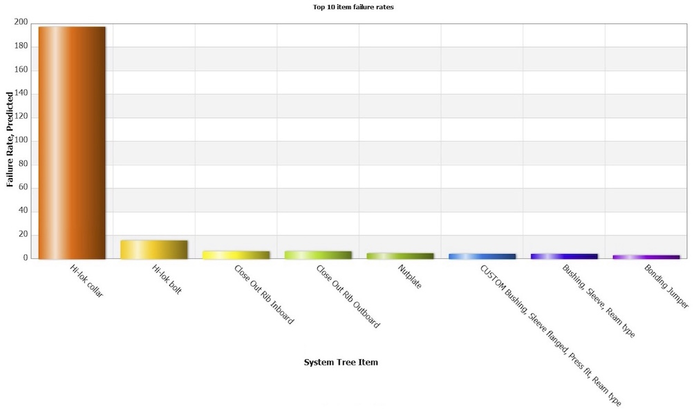
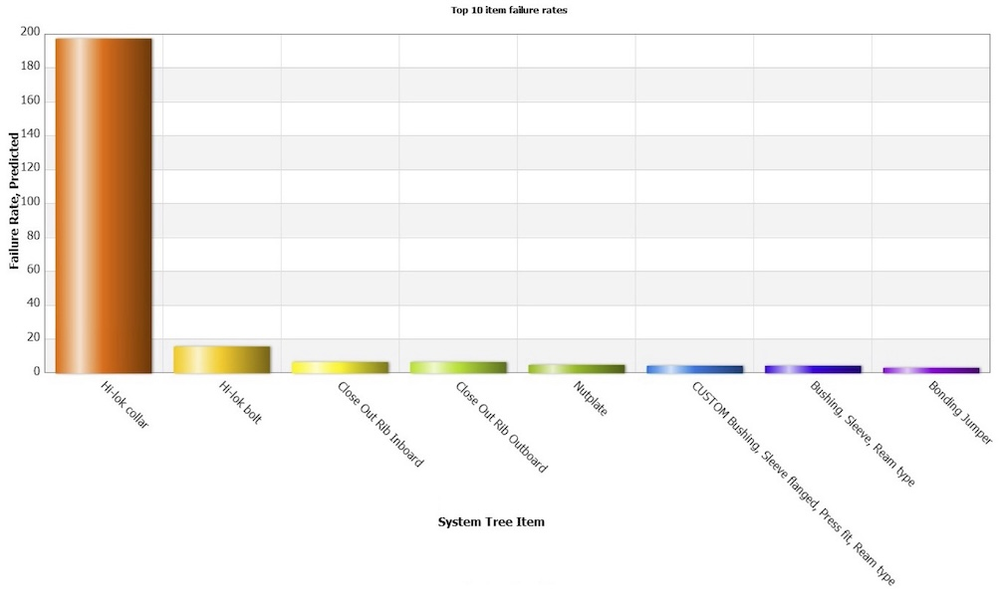

Case study
Case study
Case study
Case study
Specialising in safety and reliability analysis across a wide range of industries.
Expertise covers both deterministic and probabilistic analysis—measuring risk based on known physical limits, environmental conditions, or historical data.
Client needs vary significantly. Some projects are driven by cost and time constraints, while others prioritise a deeper understanding of performance and design success.
Insights from past projects are applied to deliver tailored, high-impact solutions, ensuring the best possible outcomes.
Experience in the aerospace sector includes collaborating with industry leaders such as Rolls-Royce Aerospace, Marenco Swisshelicopter AG, and MTU Aero Engines. Specialising in safety and reliability analysis, tasks undertaken include assessing complex systems such as the TP400 Engine Protection & Monitoring Unit for military aircraft and Lean Burn technology for Rolls-Royce engines. Proven methodologies like Failure Modes & Effects Analysis (FMEA), Weibull Analysis, and Monte Carlo simulations have been employed to predict failure rates and enhance system safety. Additionally, composite material reliability for FACC AG components has been addressed, ensuring compliance with rigorous standards like EASA (European Aviation Safety Agency) for airworthiness. These services help ensure high reliability and cost-efficiency, making them a valuable investment for any aerospace organisation.
 The analysis covered every aspect of the engine, including the nacelle, fan module, internal gearbox, high-pressure compressor (HPC), combustor, high-pressure turbine (HPT), low-pressure turbine (LPT), accessory gearbox, oil system, and engine air systems. Each module was rigorously evaluated for reliability, adhering to stringent contractual and certification standards, which required an IFSD rate of less than 0.01 per 1,000 engine flight hours (EFH) and an MTBUER greater than 20,000 EFH.
The final reliability predictions demonstrated exceptional performance, surpassing project requirements.
The analysis covered every aspect of the engine, including the nacelle, fan module, internal gearbox, high-pressure compressor (HPC), combustor, high-pressure turbine (HPT), low-pressure turbine (LPT), accessory gearbox, oil system, and engine air systems. Each module was rigorously evaluated for reliability, adhering to stringent contractual and certification standards, which required an IFSD rate of less than 0.01 per 1,000 engine flight hours (EFH) and an MTBUER greater than 20,000 EFH.
The final reliability predictions demonstrated exceptional performance, surpassing project requirements.
 Conclusions drawn from the analysis highlighted the most frequent failure causes, notably installation errors and hydrogen embrittlement, along with their potential impacts on helicopter safety.
This rigorous FMEA process has provided Marenco Swisshelicopter AG with essential insights to enhance the design and safety of the SKYe SH09 helicopter, proactively mitigating risks and ensuring optimal aircraft reliability.
Conclusions drawn from the analysis highlighted the most frequent failure causes, notably installation errors and hydrogen embrittlement, along with their potential impacts on helicopter safety.
This rigorous FMEA process has provided Marenco Swisshelicopter AG with essential insights to enhance the design and safety of the SKYe SH09 helicopter, proactively mitigating risks and ensuring optimal aircraft reliability.
Engine protection and monitoring is a vital safety feature in aviation, particularly for aircraft systems where human lives depend on reliable performance. A prime example is the Electronic Protection & Monitoring Unit (EPMU) installed on the TP4-D6 engines powering the Airbus A400M military transport aircraft. The EPMU continuously monitors critical engine parameters to detect and swiftly respond to anomalies, proactively shutting down the engine to prevent hazardous situations or catastrophic failures.
 To ensure optimal operational safety and reliability, extensive analysis and testing were carried out. The project rigorously adhered to industry-standard guidelines including SAE ARP 4761 (Guidelines and Methods for Conducting the Safety Assessment Process on Civil Airborne Systems and Equipment) and SAE ARP 5580 (Recommended Failure Modes and Effects Analysis Practices for Non-Automobile Applications). For deterministic reliability prediction of electronic components, the project utilized Military Handbook MIL-HDBK-217, while mechanical reliability predictions were guided by the Naval Surface Warfare Centre's 'Handbook of Reliability Prediction Procedures for Mechanical Equipment'.
Additionally, the project addressed the critical safety concern of cosmic radiation effects on Field-Programmable Gate Arrays (FPGAs) at high altitudes, specifically Single Event Effects (SEEs) and Single Event Upsets (SEUs). These events, while not reliability issues per se, represent significant safety risks capable of inadvertently triggering critical functions. Therefore, comprehensive risk assessments were conducted using methodologies outlined in IEC TS 62396 ('Process Management for Avionics: Atmospheric Radiation Effects').
By integrating these assessments with Failure Modes, Effects, and Criticality Analysis (FMECA), a detailed Fault Tree Analysis (FTA) was performed to quantify and mitigate the likelihood of hazardous engine shutdowns. This meticulous approach ensures maximum safety, reliability, and operational effectiveness of the Airbus A400M aircraft engines.
To ensure optimal operational safety and reliability, extensive analysis and testing were carried out. The project rigorously adhered to industry-standard guidelines including SAE ARP 4761 (Guidelines and Methods for Conducting the Safety Assessment Process on Civil Airborne Systems and Equipment) and SAE ARP 5580 (Recommended Failure Modes and Effects Analysis Practices for Non-Automobile Applications). For deterministic reliability prediction of electronic components, the project utilized Military Handbook MIL-HDBK-217, while mechanical reliability predictions were guided by the Naval Surface Warfare Centre's 'Handbook of Reliability Prediction Procedures for Mechanical Equipment'.
Additionally, the project addressed the critical safety concern of cosmic radiation effects on Field-Programmable Gate Arrays (FPGAs) at high altitudes, specifically Single Event Effects (SEEs) and Single Event Upsets (SEUs). These events, while not reliability issues per se, represent significant safety risks capable of inadvertently triggering critical functions. Therefore, comprehensive risk assessments were conducted using methodologies outlined in IEC TS 62396 ('Process Management for Avionics: Atmospheric Radiation Effects').
By integrating these assessments with Failure Modes, Effects, and Criticality Analysis (FMECA), a detailed Fault Tree Analysis (FTA) was performed to quantify and mitigate the likelihood of hazardous engine shutdowns. This meticulous approach ensures maximum safety, reliability, and operational effectiveness of the Airbus A400M aircraft engines.
 To achieve this, the reliability analysis employed both deterministic and probabilistic methodologies. Standardised approaches from established reliability guidelines such as NSWC-10 ('Handbook of Reliability Prediction Procedures for Mechanical Equipment') and NPRD ('Non-electronic Parts Reliability Data') were utilised for conventional components. Composite materials underwent a rigorous probabilistic analysis informed by MIL-HDBK-17 ('Composite Materials Handbook'), accounting for variations in manufacturing processes and material strength.
The analysis meticulously identified and assessed potential failure points within the spoiler assembly, quantifying risks through Weibull distribution modeling. Particular attention was given to composite material reliability, recognising that material consistency during production significantly impacts operational lifespan. This nuanced understanding allowed for more accurate risk assessment and better-informed component selection.

By integrating detailed material analysis and predictive modelling, this project ensured the COMAC C919 spoiler assembly met and exceeded rigorous reliability and safety standards, thereby significantly enhancing overall aircraft operational integrity and passenger safety.
To achieve this, the reliability analysis employed both deterministic and probabilistic methodologies. Standardised approaches from established reliability guidelines such as NSWC-10 ('Handbook of Reliability Prediction Procedures for Mechanical Equipment') and NPRD ('Non-electronic Parts Reliability Data') were utilised for conventional components. Composite materials underwent a rigorous probabilistic analysis informed by MIL-HDBK-17 ('Composite Materials Handbook'), accounting for variations in manufacturing processes and material strength.
The analysis meticulously identified and assessed potential failure points within the spoiler assembly, quantifying risks through Weibull distribution modeling. Particular attention was given to composite material reliability, recognising that material consistency during production significantly impacts operational lifespan. This nuanced understanding allowed for more accurate risk assessment and better-informed component selection.

By integrating detailed material analysis and predictive modelling, this project ensured the COMAC C919 spoiler assembly met and exceeded rigorous reliability and safety standards, thereby significantly enhancing overall aircraft operational integrity and passenger safety.
In the marine sector, successful collaborations have included projects for Hagenuk Marinekommunikation and Raytheon Anschütz. Focused on Integrated Logistics Support (ILS), Reliability Block Diagrams (RBD), and Obsolescence Management, key tasks have included providing Failure Modes & Effects Analysis (FMEA) for advanced gear systems used in wave energy recovery. These solutions ensure systems are not only reliable but optimised for long-term performance at the lowest possible lifecycle cost. The ability to apply industry-leading methodologies guarantees that marine systems remain operational with minimal downtime, translating directly to reduced maintenance costs and improved safety.
Skills in reliability analysis and risk assessment can be applied to the finance sector to address risks associated with financial products and operations. Tasks undertaken to date include probabilistic analysis to provide clear insights into financial risk management. By applying these methods, organisations in the finance industry can make more informed decisions, minimise risk exposure, and boost confidence in their financial products and strategies.
Involvement in projects such as Quiet Revolution Ltd’s vertical axis wind turbine (QR5) development highlights the ability to enhance the performance and reliability of green energy systems. Tasks undertaken involved mechanical and electronic reliability assessments and compliance with MIL-HDBK 217 standards, ensuring that renewable energy products perform efficiently in urban environments. By improving reliability, these services help optimise energy production, lower maintenance costs, and increase system longevity. This focus on reliability and sustainability is vital for advancing green energy technologies and offering cost-effective solutions to meet increasing global energy demands.
The experience working with Mallinckrodt Pharmaceuticals on the SOLAS Photopheresis treatment equipment highlights the importance of reliability in the health care industry. Tasks undertaken, such as developing a comprehensive reliability plan and ensuring compliance with FDA regulations, EU Medical Device Regulation (EU MDR), and IEC 60601-1:2024 standards, are essential for designing safe, high-performance medical equipment. This kind of reliability analysis helps reduce the risk of equipment failure, ensuring that the equipment performs as intended throughout its lifecycle. For health care providers, ensuring the safety and reliability of their equipment is paramount, and these services ensure minimal downtime and maximum performance, benefiting both healthcare providers and patients.
Experience with ALSTOM Transport has involved facilitating the implementation of RAMS (Reliability, Availability, Maintainability, Safety) processes in alignment with EN 50126, IEC 60812, and IEC 61508 standards. Key tasks included ensuring that rail systems not only meet technical specifications but also benefit from reduced lifecycle costs through optimised maintenance strategies. The ability to improve long-term reliability and availability while managing costs is crucial in the rail industry, where equipment uptime and cost-efficient operations are critical to maintaining schedules and minimising delays. These reliability-focused services contribute directly to operational efficiency and cost savings, making them indispensable to any rail operator.
If you find my work valuable, consider supporting me on Patreon.